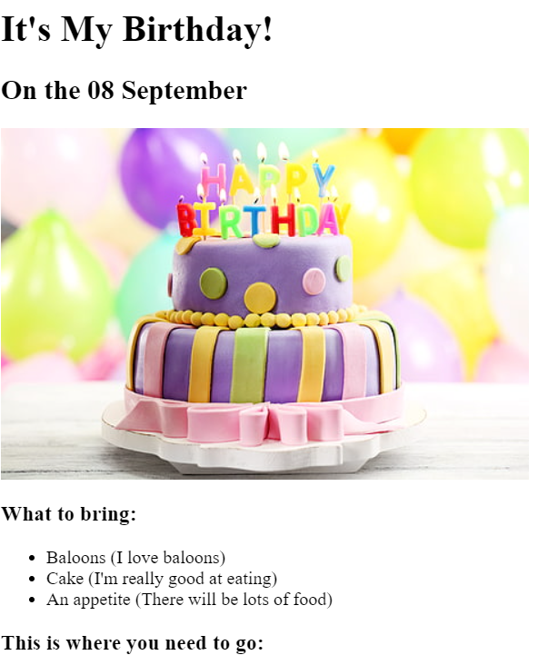

Clement Portfolio
I'm a Web Developer
The Best Movies According to Clement
My top movies of all-time.
Spirited Away
This is my Fovoruite anime. I love the beautiful images.
Ex Man
Really cool sci-fi movie.
Drive
Super beatiful film. Really artistic.
It's My Birthday!
On the 08th September

What to bring:
- Baloons (I love baloons )
- Cake(I'm really good at eating)
- An appetite (There will be lots of food)
About Me Contact Me